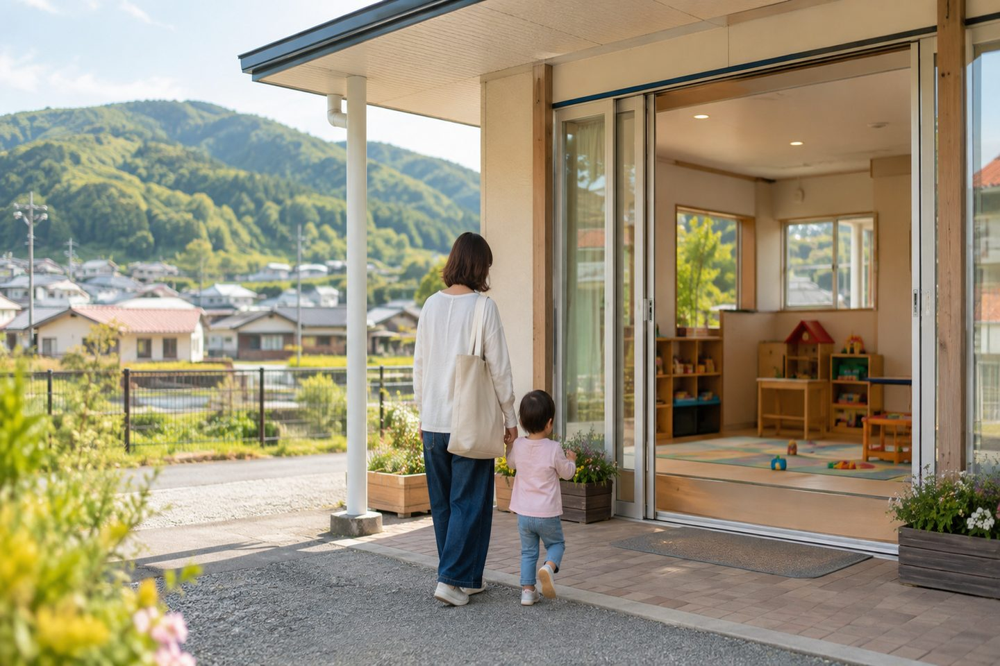
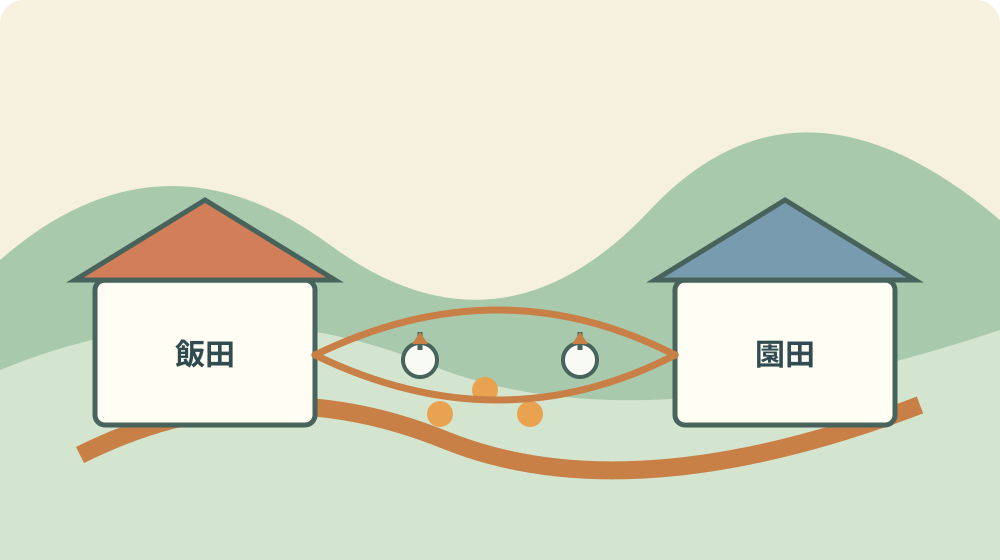
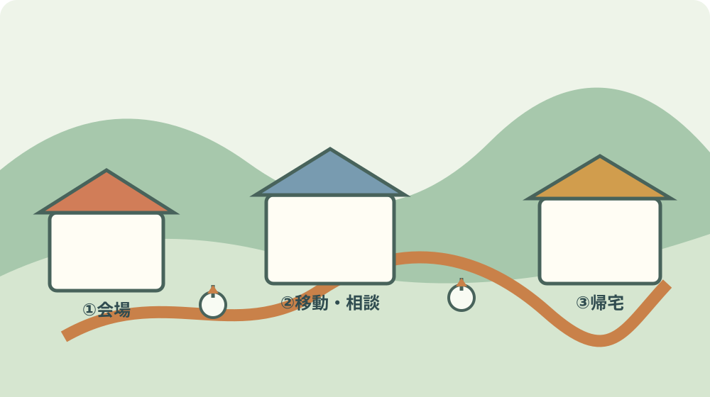

森町の移動子育て支援｜飯田・園田の9月日程

この記事の要点
Q. 森町の移動子育て支援センターは、2026年9月にどこで開かれますか。
A. 2026年9月30日（水曜日）は飯田総合センターで、午前10時から11時20分まで開催されます。「森のコアラ広場」は申込み不要で、森町在住の未就学児と保護者が対象です。令和8年度は飯田・園田の各会場6回。両方へ参加できるため、会場までの移動と地区の暮らしを一緒に試せます。
森町の令和8年度版「地域訪問子育て広場」を、2026年9月4日に確認しました。資料は森町公式の2026年3月号広報に掲載されています。
移動子育て支援センターの名称は「森のコアラ広場」です。飯田総合センターと園田総合センターへ出向き、地域で親子の時間をつくります。
2026年9月30日（水曜日）は飯田総合センターです。テーマはミニうんどう会です。
時間は午前10時から11時20分です。申込みは不要です。対象は森町に住む未就学児とその保護者です。
令和8年度は、飯田会場が6回、園田会場が6回です。片方の地区だけの行事ではなく、二つの生活圏を行き来できます。
対象者は飯田と園田のどちらの会場にも参加できます。森町が実家の方は、祖父母も参加できると資料に案内されています。
この制度を移住先の決定材料だけで見ると、少し狭くなります。住んだ後の朝の準備、車の移動、子どもの機嫌まで含めて試す場です。
森のコアラ広場で分かること
森のコアラ広場の内容は、自由遊び、親子遊び、季節の製作などです。子育て相談もできます。
自由遊びは、決められた課題をこなす会ではありません。親子が会場の様子を見ながら過ごす時間として案内されています。
親子遊びは、家庭の遊びと地域の場所の違いを比べる材料になります。普段の持ち物や子どもの休憩時間も確認します。
季節の製作があるため、9月30日のテーマだけでなく、年度の他の日程も会場を知る手掛かりになります。
子育て相談ができると資料にあります。ただし、相談の内容や時間は当日の状況で変わる可能性があります。
子どもが途中で帰りたくなった場合の出口、トイレ、飲み物、着替えを先に見ます。イベントの内容より暮らしの細部が残ります。
申込み不要でも、定員や混雑がないと断定してはいけません。会場の案内と職員の指示に従います。
9月30日に参加する家族は、公式資料の日付とテーマを紙に書いてから出発します。日程の取り違えを減らせます。

2026年9月30日は飯田総合センター
2026年9月30日（水曜日）の会場は飯田総合センターです。園田ではありません。地区名を確認してから出発します。
テーマはミニうんどう会です。運動の内容や持ち物の細部は、町内回覧、子育て支援センターだより、森町公式LINEなどの最新案内で確認します。
時間は午前10時から11時20分です。受付の開始時刻は資料に別記されていないため、早く着き過ぎる場合の待ち場所は未確認です。
飯田総合センターまでの交通手段は、家庭ごとに異なります。自家用車、家族の送迎、徒歩、自転車を実際の距離で比べます。
未就学児は、同じ距離でも大人より時間がかかります。駐車場所から入口までの移動を、地図上の直線距離で省略しません。
9月末は残暑が残る可能性があります。水分、帽子、着替え、子どもの体調を確認します。気候の見込みだけで参加を決めません。
親が一人で子どもを連れて行くなら、帰りの荷物と眠気も見ます。片道の計画だけでは生活の試行になりません。
家族が同行できる場合は、会場にいる間に飯田地区で買い物、通院、保育、通勤の動線を一つ確認できます。
移住前の家族にとって、施設へ参加する日は、物件を見る日とは違います。住民としての朝を想像するための観察日です。
令和8年度の飯田・園田の日程
令和8年度の日程は、2026年4月22日から2027年3月24日までの12回です。飯田と園田が交互に設定されています。
2026年4月22日（水曜日）は園田総合センターで、テーマはふれあい遊びで仲良しです。
2026年5月27日（水曜日）は飯田総合センターで、テーマは歯みがきシュッシュです。
2026年6月24日（水曜日）は園田総合センターで、テーマは雨の日も楽しくです。
2026年7月22日（水曜日）は飯田総合センターで、テーマは夏の遊びを楽しむです。
2026年8月26日（水曜日）は園田総合センターで、テーマは暑い日も元気よくです。
2026年9月30日（水曜日）は飯田総合センターで、テーマはミニうんどう会です。
2026年10月28日（水曜日）は園田総合センターで、テーマは秋を感じる遊びです。
2026年11月25日（水曜日）は飯田総合センターで、テーマは絵本でふれあいです。
2026年12月15日（火曜日）は園田総合センターで、テーマは楽しいクリスマスです。曜日が水曜日ではないため、日付で確認します。
2027年1月27日（水曜日）は飯田総合センターで、テーマはわらべ歌に親しむです。
2027年2月24日（水曜日）は園田総合センターで、テーマはうれしいひなまつりです。
2027年3月24日（水曜日）は飯田総合センターで、テーマはもう春ですねです。
資料にある会場とテーマは、日程を選ぶための公表情報です。内容が変更される場合は、町内回覧や支援センターだよりで追います。
地区差は、参加回数より道の違いに出る
飯田と園田は、日程表では交互に現れます。二会場を同じ施設だと扱わず、家からの道を別に見ます。
飯田へ行く日は、飯田総合センターまでの駐車、入口、帰り道を確認します。園田へ行く日は、園田総合センターで同じ項目を見ます。
車を使う家族は、駐車場から子どもを抱く時間を測ります。雨の日は屋根の有無で荷物の扱いが変わります。
車を使わない家族は、バス停、自転車置き場、歩道の連続を確認します。資料は交通手段の詳細を示していないため、現地の確認が要ります。
地区によって、買い物や通院の帰りに寄れるかが違います。広場への参加を、イベントだけの往復にしない見方です。
園田会場が自宅に近い家庭でも、飯田の日に参加できる案内があります。行きやすい方を一つ試し、もう一方は比較のために歩きます。
祖父母が参加する場合は、子どもを見てもらうためだけでなく、森町の親族が普段どこへ出かけるかを知る機会になります。
町外の家族が同行するなら、会場の設備だけでなく、親が帰宅後に休めるかまで聞きます。移住後の支援は施設の中だけでは完結しません。
私は、飯田と園田の各6回という数字を、回数の競争ではなく、二つの生活圏を試す12個の入口と読みます。
良い点：各会場6回で、地区を一度だけ見ない
森のコアラ広場の良い点は、飯田と園田の2会場を持ち、令和8年度に各6回ずつ開催することです。
同じ会場を一度見るだけでは、季節、子どもの体調、道路の混み方は分かりません。複数回の日程が比較材料になります。
2026年9月30日の飯田は、夏の終わりから秋へ向かう時期です。7月や8月の飯田と同じ暑さとは限りません。
園田の10月、12月、2月の開催も、別の季節に地区を見る日になります。参加できる会場の幅があります。
申込み不要なので、予定と体調が合えば参加を検討しやすい仕組みです。予約がないことと、必ず参加できることは分けて考えます。
子育て相談もできるため、支援の情報を親子の遊びと同じ場所で聞けます。相談内容は家庭の事情に合わせて準備します。
森町に実家がある祖父母の参加が案内されている点も、町外家族には意味があります。親子だけでなく、祖父母と子どもの距離を確かめられます。
森町児童館・子育て支援センターの公式ページでも、飯田・園田に出向く行事として紹介されています。広報だけでなく施設ページも確認できます。
注文したい点：行事の日と、普段の暮らしを分けない
公式資料は、会場、時間、対象、日程を確認できます。会場までの交通、混雑、設備、参加者数は家庭ごとの確認事項です。
行事の日に人が集まることは、その地区の普段の子育て環境をそのまま表しません。一日だけで移住の結論を出さないようにします。
子どもが楽しめたことも、物件の良さと同じではありません。通勤、買い物、病院、保育、送迎を別の日に見ます。
一方で、行事の往復は地区の道を知るきっかけになります。暮らしの確認を後回しにしなければ、短い外出でも材料が増えます。
申込み不要の行事は参加しやすい一方、キャンセル連絡の仕組みが本文にない場合があります。体調不良なら無理せず、次回を選びます。
祖父母の参加が可能でも、同居家族や親族全員の支援が決まるわけではありません。誰が何を担えるかを別に話します。
両会場へ参加できても、毎回の送迎費、時間、車の維持は家庭の負担です。無料の行事と、参加にかかる家計を分けます。
森町の人が会場を開け、準備し、片付ける負担もあります。参加者は、時間変更や会場のルールを確認し、現場へ無理を押し付けない利用をします。
私は、行事の案内に「会場までの移動の目安」と「変更時の確認先」が加わると、町外家族も予定を組みやすいと考えます。現在の資料にない情報は推測しません。

対案・結論：9月30日を暮らしの試行日にする
2026年9月30日に参加する家族は、出発前に飯田総合センターまでの道を確認します。地図の表示だけでなく、子どもを連れて歩く時間を見ます。
会場では、入口、トイレ、休める場所、飲み物、帰宅時の動線を見ます。子どもが遊ぶ姿だけを記録しません。
相談したいことを一つ紙に書きます。保育、遊び場、転入、通勤、送迎など、家族の今の疑問を一つに絞ります。
帰りに飯田地区の買い物先か通院先を一つ通ります。移住を検討する家族は、イベントの時間と日常の時間を続けて体験します。
園田地区が候補なら、次回の園田総合センターの日程を確認します。2026年10月28日は園田で秋を感じる遊びです。
参加後すぐに住む場所を決める必要はありません。子どもが疲れたか、親が運転できたか、帰宅後に余裕があったかを書きます。
今日できる小さな一歩は、2026年9月30日の会場名と、家からの往復時間を家族のカレンダーに入れることです。
家族に残す記録：子どもの生活圏を言葉にする
記録の一行目に、子どもの年齢と対象条件を書きます。移動子育て支援の対象は森町在住の未就学児と保護者です。
二行目に、飯田と園田の会場を並べます。どちらにも参加できる案内を、家族全員が見られる場所に置きます。
三行目に、2026年9月30日、飯田、午前10時から11時20分、ミニうんどう会と書きます。
四行目に、持ち物を最新案内で確認する欄を作ります。公表資料にない持ち物を、経験や想像で確定しません。
五行目に、参加後に見る生活項目を書きます。買い物、通院、保育、通勤、送迎のうち、家族に必要な一つを選びます。
森町で暮らしを試す日曜に、図書館と子育て支援センターを一日の流れで見る記事もあります。日曜の普段と平日の広場を比べる導線です。
子連れ移住の入り時期を考える家族は、九月に転入するか四月に合わせるかを学校と放課後児童クラブから逆算する記事も参照できます。
支援制度の数より困った日の相談先で比べるなら、子育て移住の相談先を確認する記事も併せて読みます。広場への参加と、相談窓口の距離を別々に記録します。
記録は移住を決めるためだけではありません。森町に実家がある祖父母が、孫とどこで過ごせるかを整理する台帳にもなります。
大石の視点：子育て支援は、地区を試す入口
私は、移動子育て支援センターを移住の決め手とは考えていません。決め手は家族の仕事、家計、住まい、通院、送迎が重なった結果です。
それでも、飯田と園田の各6回には価値があります。地区名を聞くだけでなく、親子がその場所へ向かう経験を重ねられるからです。
会場の中で子どもが過ごし、外へ出て車に乗り、家へ帰るまでが一つの生活です。そこに無理があれば、物件価格だけを見ても解決しません。
町の人は、子育ての場を準備し、相談を受け、年度の日程を組んでいます。その負担があるから、未就学児の家族が地区を知る入口になります。
参加者側も、無料で申込み不要という条件だけを消費せず、会場のルールと時間を守ります。支援を続ける担い手への敬意です。
今日すぐ転入を決める必要はありません。飯田の9月30日を一度試し、園田の次の日程と、日常の移動を記録すれば判断材料が増えます。
まとめ：飯田の9月30日を、二つの地区の比較へつなげる
森町の移動子育て支援センター「森のコアラ広場」は、飯田総合センターと園田総合センターで開かれます。
2026年9月30日（水曜日）は飯田総合センター、午前10時から11時20分、テーマはミニうんどう会です。
申込みは不要で、対象は森町在住の未就学児と保護者です。対象者は両会場に参加でき、令和8年度は各6回です。
今日の一歩は、9月30日の往復時間をカレンダーに入れ、参加後に買い物、通院、保育、送迎の一つを記録することです。
よくある質問
Q1. 2026年9月の移動子育て支援はいつですか。
A1. 2026年9月30日（水曜日）に飯田総合センターで開催されます。時間は午前10時から11時20分、テーマはミニうんどう会です。申込みは不要です。
Q2. 森町外の家族や祖父母も参加できますか。
A2. 対象は森町在住の未就学児とその保護者です。祖父母は、森町が実家の方について参加できると令和8年度資料に案内されています。会場ごとの条件は公式資料で確認してください。
Q3. 飯田と園田は両方参加できますか。
A3. 令和8年度資料では、対象の方は飯田総合センターと園田総合センターのどちらの会場にも参加できると案内されています。各会場は年度6回、合計12回の日程です。
日程、テーマ、会場、対象、時間は変更されることがあります。参加直前に森町公式の広報、子育て支援センターだより、公式LINEを確認してください。
参考にした公式情報
- 広報もりまち 令和8年3月号／静岡県森町（p.8の森のコアラ広場、2026年9月30日飯田、令和8年度日程、対象、時間を2026年9月4日に確認）
- 森町児童館・森町子育て支援センター／静岡県森町（飯田・園田の移動子育て支援、対象、会場、年間各6回、問い合わせ先を2026年9月4日に確認）
- 子育て支援・相談窓口／静岡県森町（子育て支援の公式入口を2026年9月4日に確認）

磐田市で小さな不動産業を営みながら、森町の空き家・農地・実家じまいのご相談を受けています。地域ですでに払われている負担を認め、担い手と維持の段取りを具体名詞で書きます。
最終確認日：2026-09-04 ／ 本記事は公表情報と執筆者の見解を分けています。会場までの交通、混雑、当日の変更、個別の相談内容は未確認です。